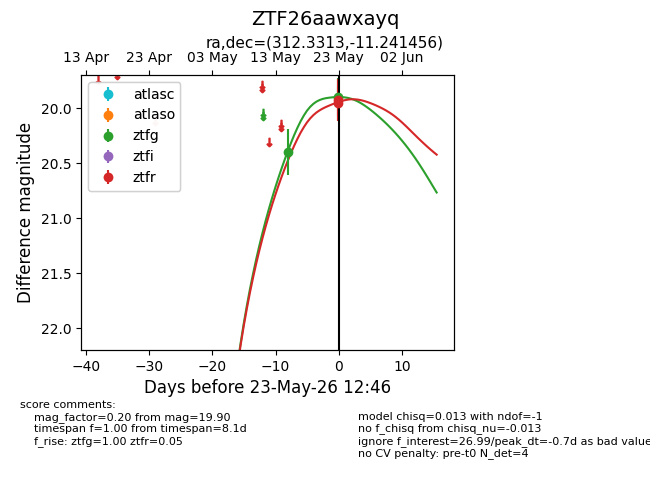
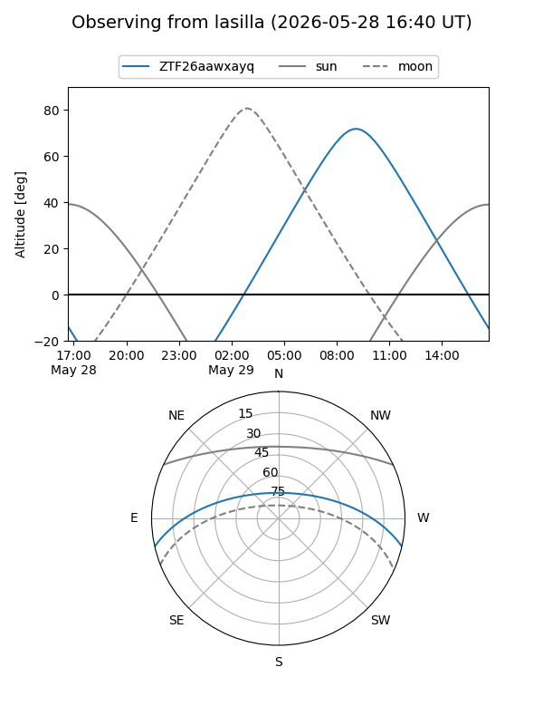
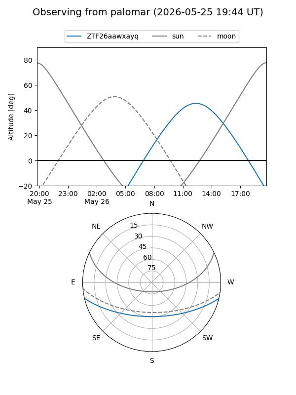
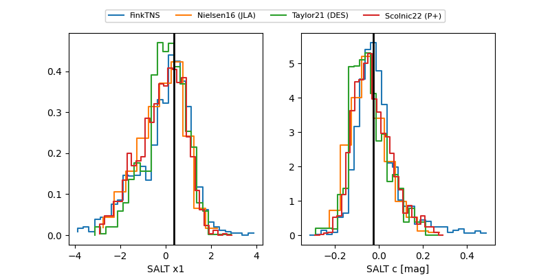

ZTF26aawxayq
Target ZTF26aawxayq at 2026-05-23 12:48
Aliases and brokers:
lsst-FINK: link
lsst-Lasair: link
lsst-ALeRCE: link
ztf-FINK: link
ztf-Lasair: link
ztf-ALeRCE: link
alt names
ZTF26aawxayq (ztf,fink_ztf)
Coordinates:
equatorial (ra, dec) = 312.3313,-11.24146
equatorial (HMS+DMS) = 20:49:19.52,-11:14:29.24
galactic (l, b) = (36.0517,-31.22238)
Flags:
Photometry:
last ztfg=19.90, ztfr=19.96
2 ztfg, 2 ztfr detections
Lightcurve

Visibility


Additional plots
